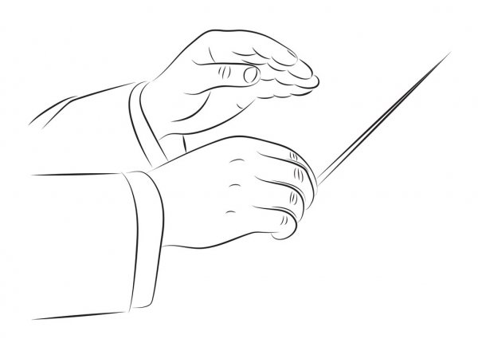
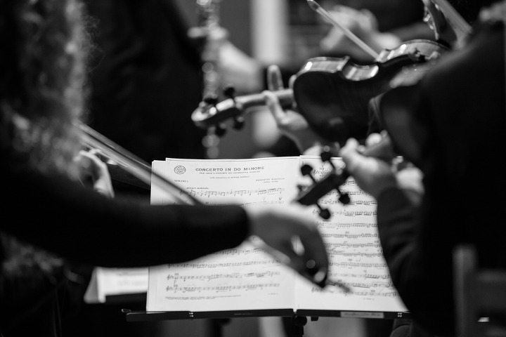
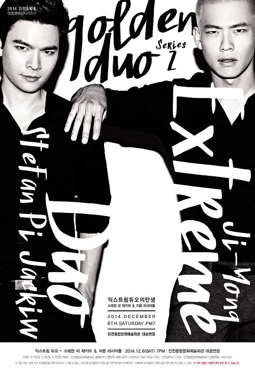

1.
아빠는 어릴 적에 지휘자가 되고 싶으셨단다.
지휘자가 되고 싶으셨던 아빠는 평범한 회사원이 되셨지만, 클래식 음악을 사랑하시는 마음은 변함이 없으셨고, 나에게도 자주 들려주시곤 했다.
그런 아빠는 딸이 음악을 했으면 하셨다.
그래서 일찍이 피아노도 배우게 하셨고, 초등학생 때는 바이올린도 배우게 해주셨다. 그렇지만 안타깝게도 나는 피아노나 바이올린 연습을 하는 것보다는 그림 그리는 것이 더 좋았다. 이제와서 생각해보면, 그 때 좀 더 열심히 악기들을 배워 둘 걸 그랬다. 바이올린은 일찌감치 그만뒀지만 피아노는 아직까지도 취미삼아 치고 있는게 얼마나 다행인지 모른다.
2.
매주 금요일이면 아빠는 회사에서 일찍 퇴근하셔서 온 가족을 서초구민회관에서 무료로 진행되는 오케스트라 공연에 데리고 가셨다.
클래식에 대해 아무것도 모르던 어린 나였지만, 공연장 내 분위기와 조명의 온도, 공연 시작 전 튜닝하는 소리, 사람들이 집중해서 공연을 보는 모습이 정말 마음에 들었다.
가만히 앉아서 음악을 듣고 있으면 어떤 날은 옆에 앉은 나이 지긋하신 노부부께서 칭찬을 해주시기도 했다. 참 얌전히 잘 듣고 있는다고.
나에게 클래식은 그래서 늘 좋은 기억이다.
그런데 어느 순간부터 나는 클래식과 자연스레 멀어졌고, 여느 10대들과 다름없이 가요를 즐겨 들었다.
저녁엔 학원에 가야 했기 때문에 아빠와 클래식 공연을 보러 갈 수 없었다.
함께 노래를 듣는 시간은 커녕 같이 대화를 나눌 수 있는 시간조차도 등굣길 아빠 차 안에서의 잠깐 뿐이었다. 그마저도 나는 부족한 아침잠을 채우는데 써버렸지만.
3.
고등학교 1학년 가을, 나는 다시 클래식을 찾게 되었다.
올림픽 공원에서 하는 파크 콘서트에 우연히 가게 되었는데, 해 질 무렵, 큰 스크린에서 정장을 입은 남자 둘의 사진이 나오고 뒷배경으로 날카로운 바이올린과 피아노 소리가 그 너른 들판에 울려퍼지는데 정말이지 충격적이었다.
그 곡의 제목을 찾아내느라 한 달을 헤맸고, 결국 찾아냈다.
올리버 메시앙의 주제와 변주라는 곡이었다. 그 남자 둘은 앙상블 디토라는 그룹에 속해있는 멤버였고.
그렇게 둘의 영상을 찾아보다가 자연스럽게 유튜브에 올라와 있는 앙상블 디토의 모든 연주 영상을 찾아보게 되면서 나의 플레이 리스트는 클래식으로 가득 채워져 갔다.
고등학교 3년 내내 나는 클래식과 함께였고, 이런 내 음악 취향은 어릴 적 아빠의 조기교육 덕이라고 생각했다.
대학생이 된 지금, 늦은 밤에 혼자 과제를 하고 있을 때면 종종 일을 미처 못 끝내신 아빠는 굳이 딸의 곁에 앉아 일을 마무리 하신다. 일을 마쳐야 하는 것은 핑계고 사실 아빠는 딸과 함께 음악을 듣고 싶어서 그러신다는 것을 난 안다. 그래서 항상 어릴 적에 아빠와 함께 듣던 클래식을 튼다.
아빠는 차이코프스키의 <1812년 서곡>을 가장 좋아하신다. 후반부에 몰아치는 대포 소리가 나오면 그렇게 신나하실 수가 없다. 환갑에 가까워가는 나이시지만 손을 허공에 저어가며 노래를 즐기는 모습은 영락없는 아이시다.
먼 훗날 아빠가 곁에 없어서 아빠를 기억해내야 할 때가 오면, 나는 어김없이 클래식을 틀 것이다.
그럼 나는 또다시 어린 날의 내가 되어 아빠와 함께 오케스트라 공연을 즐기고 있겠지.
내 인생의 중요한 클래식 곡 TOP 5
1. 경기병 서곡 - 주페 (Light Cavarly : Overture - Franz Von Suppe)
어릴 때 아빠 차에 타면 늘 듣던 곡이다.
아빠가 하도 좋아하셔서 같이 듣긴 들었으나 그 땐 뭐가 그렇게 좋은 지 몰랐는데 들을 수록 명곡이다.
2. (바이올린과 피아노를 위한) 주제와 변주 - 메시앙 (Theme & Variations - Olivier Messiaen)
고등학교 1학년, 클래식에 본격적으로 눈을 뜨게 해 준 곡이다.
3. 피아노 삼중주 2번 C단조, 작품 번호 66 - 멘델스존 (Piano Trio No,2 C minor Op.66 - Felix Mendelssohn)
고등학교 3년 내내 등교할 때 질리게 들었던 곡이다.
멘델스존을 나의 최애 작곡가로 등극시켜주었다.
그렇지만 아빠는 실내악은 본인 취향이 아니라고 하셨다.
4. 그대는 나의 안식 - 슈베르트 (Du bist die Ruh, D.776 - Franz Schubert)
아빠가 밤에 보시던 <더 콘서트>라는 프로그램에서 들은 곡.
처음으로 듣자마자 눈물이 났던 곡이다.
가곡말고 리처드 용재 오닐 버전으로 들어야 한다.
5. 1812년 서곡 - 차이코프스키 (1812 Overture - P. I. Tchaikovsky)
우리 아빠 최애곡.
꼭 대포 소리 빵빵한 곡으로 틀어드려야 한다.
대포 소리를 잘 구현해낸 영상을 찾느라 아빠와 함께 유튜브를 샅샅이 뒤졌던 기억이 있다.